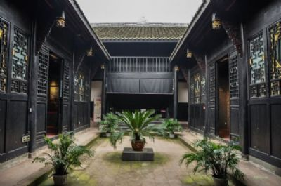

潼南区
位于重庆市西北部，公元373年（东晋宁康元年）建制设
县，1912年设东安县，1914年因地处潼川府之南更名为潼南，
2015年经国务院批准撤县设区。
潼南区地处成渝经济区中心地带、成渝城市群核心板块，
是重庆向西开放的重要通道；渝遂快速铁路、高速公路横贯
东西，规划建设的南泸、北安高速公路畅通南北，国道246
、319、351线穿境而过，是成渝重要交通枢纽；天然气储量
3000亿立方米以上，是全国单体规模最大的整装气藏主产区；
涪、琼两江横贯，水电资源藏量14万千瓦，是全国小水电之乡
；属盆地浅丘地貌，地势平坦，海拔高度300—450米，可开发
利用空间广阔。 |
|
大佛寺景区是位于潼南城西郊的定明山北麓，涪江南岸。景区内保存有隋、唐、宋、明清、民国时期佛、道教摩崖造像126龛928尊，遗存有碑文以及历代文人学士书刻的题咏87通，造像记、题记31则；字体各异楹联21幅。有世界第一室内饰金大佛，最早使用全琉璃顶的古建筑七檐佛阁，我国古代四大回音建筑之一的石磴琴声，全国最大的顶天佛字，罕见的天然回音壁海潮音以及翠屏秋月、黄罗帐、合掌石峰、百仙岩、鉴亭、千佛岩、仙女洞、读书台、 |
|  |
杨闇公故里景区属全国爱国主义教育示范基地，全国红色旅游经典景区，重庆市六个红色景区暨十条红色旅游精品线路之一，辖杨闇公旧居、陵园，杨尚昆旧居、陵园和全国重点文物保护单位杨氏民宅五个景点。2011年创建为国家AAAA级旅游景区。杨闇公烈士陵园位于重庆市潼南县城郊石碾村尖山子，为纪念中国共产主义运动先驱、中共重庆地方执行委员会第一任书记兼军委书记杨闇公烈士而修建，是全国重点烈士纪念建筑物保护单位和全国爱国 |
|
陈抟故里·崇龛花海景区位于潼南崇龛镇，距潼南城区30公里，崇龛镇建于隋代开皇三年（公元583年）。公元616年，隆龛镇升建为隆龛县，县址瓦子堡史家坝（现大屋村）。712年因避唐玄宗李隆基名讳，改名崇龛县，967年，崇龛县降为崇龛镇，民国时期又名漏孔场。1951年建崇龛乡，1967年改名光辉乡，1993年拆乡建镇，并光辉、红星、朱家乡于一镇，取名光辉镇。2000年7月光辉镇恢复旧名崇龛镇，被评为重庆特色景观旅游名镇、被评为重庆生态旅游示范镇。从刊水库水利风景区被评为国家水利风景区。崇龛镇薛家村获得“中国乡村旅游模范示范村”称号。 |
|